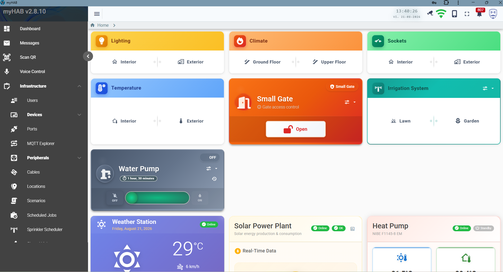
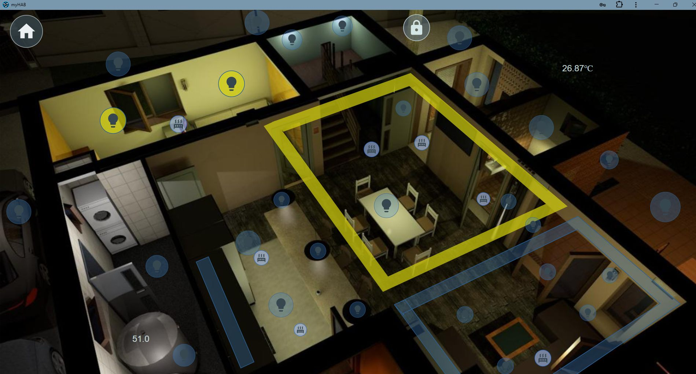
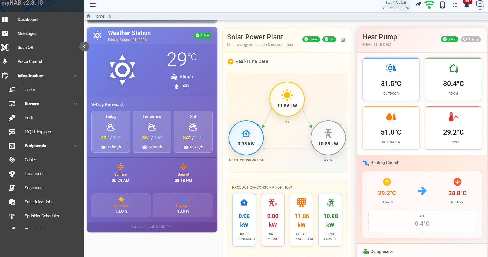
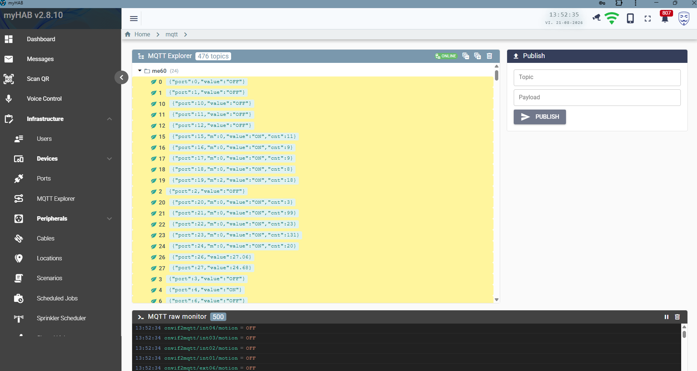
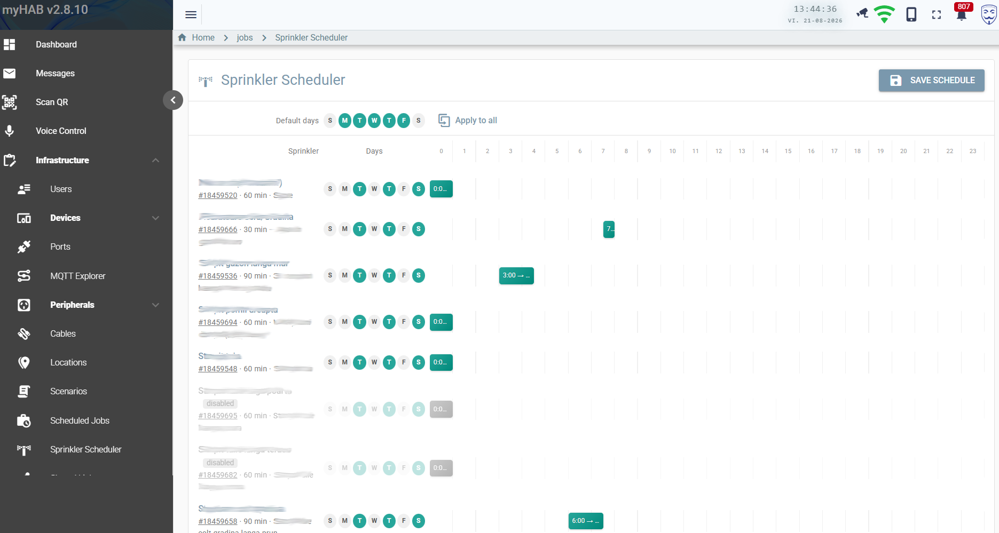
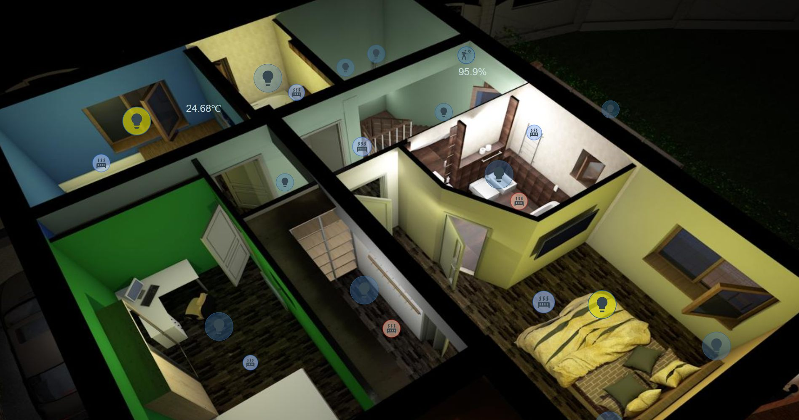
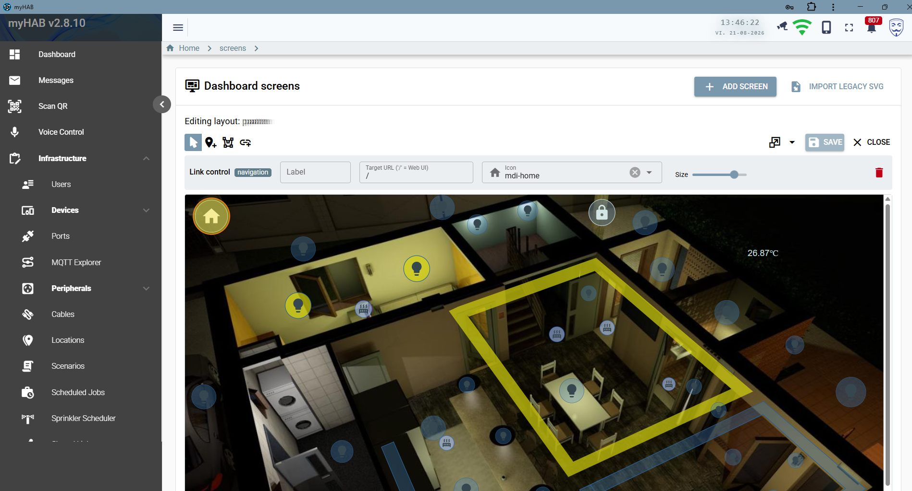
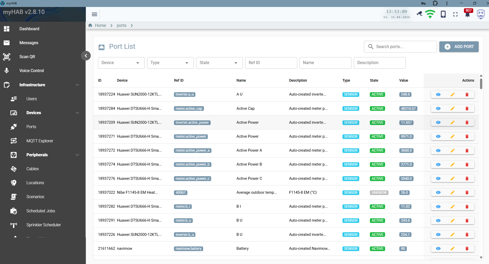
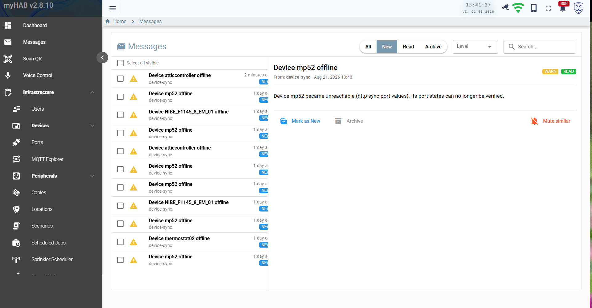

myHAB runs on your own hardware and talks directly to your devices over MQTT — no vendor cloud in the control path. Wire up ESP32 and MegaD controllers, solar inverters, heat pumps and weather data, then drive it all from a floor-plan dashboard, a scenario script, a Telegram message or your voice.

Most home automation software models devices. myHAB models the whole installation — zones, racks, patch panels, cables, controller ports and the peripherals wired to them — so what you see on screen matches what is actually in the wall.
Devices talk MQTT to your own broker. Commands never leave the LAN, and the system keeps working when your internet does not.
Cables, patch panels, racks and controller ports are first-class entities. Print a QR label, scan it later, and land on the exact port you're chasing.
Solar production, per-phase grid metering and heat-pump statistics are stored as time series and aggregated hourly, daily and monthly.
Scenarios are short Groovy scripts — if (isRaining()) switchOff(...) — triggered
by cron, by device events, or by hand.
Hand out a tokenised link that opens the gate three times in the next two days, optionally PIN-protected, with a full audit trail of every attempt.
An LLM agent is grounded in your live catalogue of peripherals, zones and scenarios — it cannot invent a device, and every action is re-validated server-side.
Drop a rendering or photo of each floor in as a background, then place live widgets on it — lights, heating valves, locks, sensors, temperature readouts and navigation links between levels. Tap a bulb on the plan and the real one switches.
26.87°C, 95.9%, on/off state colouring
Solar production, house consumption, grid import and export flow through one animated diagram. The heat pump reports every sensor it has — outdoor, room, supply, return, hot water, brine — plus compressor hours, starts and the energy split between heating and hot water.

Create a link for one peripheral — a gate, a light, a pump, a sprinkler — with a validity window, a maximum number of uses and an optional PIN. The recipient gets a single-purpose page. No account, no app, no access to anything else.


Say “turn off everything on the terrace” or “aprinde lumina din birou”. Speech is transcribed in the browser, an LLM agent maps it to concrete actions against your real catalogue, and the reply is spoken back — optionally in a natural neural voice.

A built-in MQTT explorer shows every retained topic as a live tree plus a raw message monitor, and lets you publish a payload by hand. The port list is the other half of the same story: every I/O line on every controller, its type, state and last value.

The sprinkler scheduler is a week-by-hour grid: pick the days, drag the start hour, set a duration per zone. Everything else — heating curves, device polling, statistics rollups, auto-off timeouts — runs on Quartz jobs whose intervals you control from configuration.

Click any image to enlarge.





Everything tied to hardware you might not own ships disabled. Enable what is actually in your house and ignore the rest.
Relay and sensor boards over MQTT. Command out, state echo back — the echo is what updates the UI, so nothing lies about its state.
Multi-port Ethernet I/O controllers, with an HTTP ?cmd=all reconciliation
sweep alongside the MQTT stream.
SUN2000 inverter and DTSU666-H smart meter: instantaneous power, per-phase grid data, daily and lifetime yield.
F1145 and family via myUplink: all temperature sensors, compressor statistics, alarms, degree-minutes.
Free weather with no API key — current conditions, 3-day forecast, hourly detail, sunrise and sunshine duration.
Robotic mower: battery, state, start / pause / resume / dock, plus notifications for errors and completed runs.
Motion and presence events bridged onto MQTT, usable as scenario triggers.
A bot with role-based menus for status, switching, gate opening and push notifications.
A Grails 7 / Groovy 4 backend on the JVM, PostgreSQL for persistence and time series, Spring Integration for MQTT, Quartz for scheduling and Hazelcast for caching. The client is a Vue 3 + Quasar PWA talking GraphQL, with STOMP over WebSocket for live state.
It ships as a single Docker image plus a database and a broker. No microservices, no message bus to operate, nothing that needs a Kubernetes cluster to survive the night.
Java 17 · Grails 7.2 · Groovy 4 · GORM/Hibernate · GraphQL · Quartz · Spring Integration · Spring Security (JWT) · Hazelcast
Vue 3 · Quasar 2 · Pinia · Apollo Client 3 · STOMP WebSocket · Workbox PWA · i18n (EN/RO)
PostgreSQL with partitioned port_values and event_log, an archive schema and rollup statistics
MQTT (Mosquitto) for devices · GraphQL for queries and mutations · WebSocket for live state · REST for the public share pages
The public demo is a seven-zone home with twenty-one peripherals and simulated ESP32 controllers answering on a real MQTT broker. Switch the lights, run a scenario, open the floor plans, break something — it resets when it goes idle.
Data is shared between visitors and resets when idle. Please don't put anything real in it.